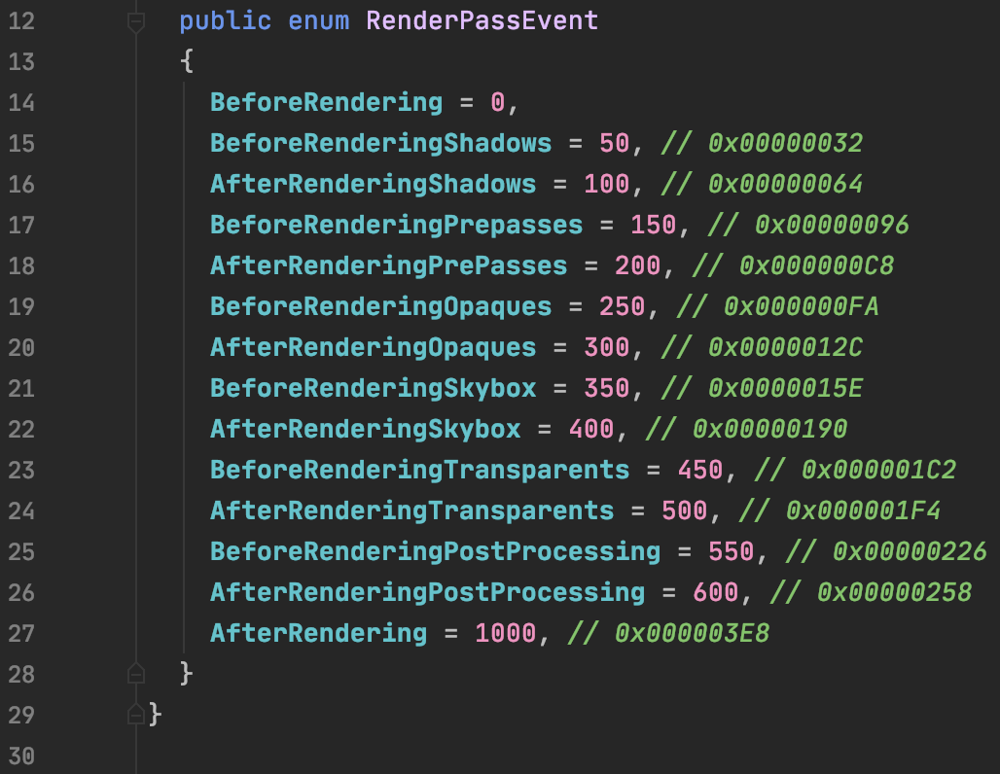
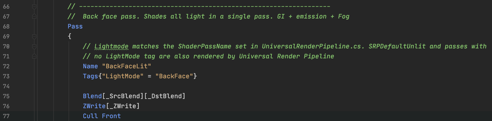
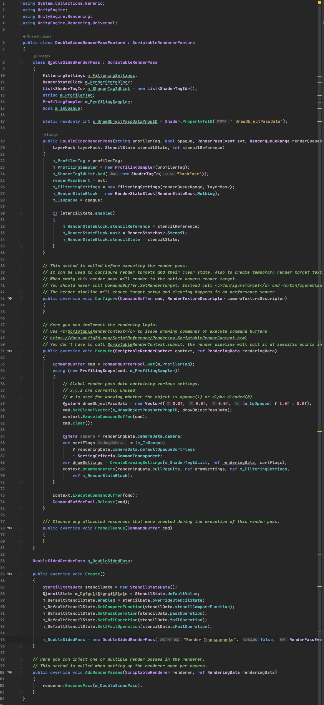
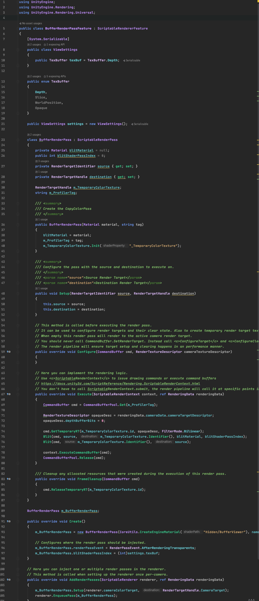
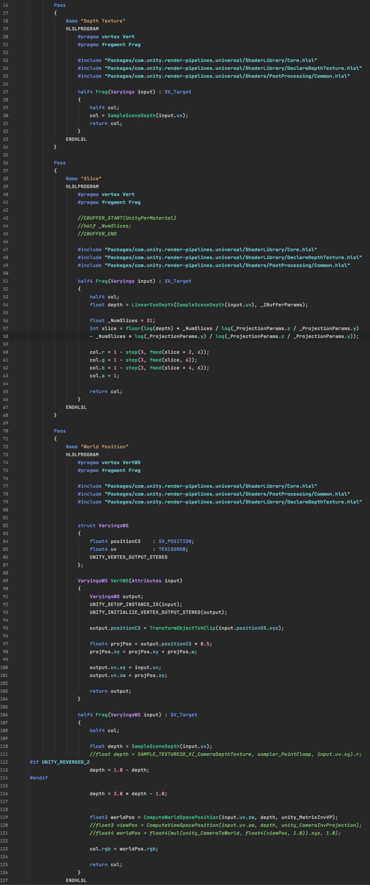

Exploring Unity Render Feature
As we all know, URP (Universal Render Pipeline) Shading is single-pass. The default Pass needs to be written under the LightMode of UniversalForward. In previous pipelines, to render double-sided transparent materials, two passes were typically used, rendering the back face first and then the front face. But how can we achieve this effect in URP? Modifying the pipeline is certainly possible, and URP's logic is quite simple. However, changing the pipeline specifically for this special effect reduces flexibility and is not a good solution. This is where we introduce a very cool feature in URP - RenderFeature.
RenderFeature allows flexible insertion of command buffers at various stages of rendering. The insertion point is determined by RenderPassEvent, as shown in the following image:
It's incredibly detailed, as you can see.
Now, I'll use RenderFeature to implement a double-sided transparent material by inserting a Pass.
First, prepare a Shader. I directly copied Lit.shader here. Then add a Pass at the beginning to render the back face. The shading for both back and front faces is the same, so I copied UniversalForward directly and set Culling to Front. Finally, define your own LightMode; I wrote it as BackFace here.
I must say, the URP source code comments are quite good, making it easy to understand the rendering logic.
Next, create a RenderFeature. In the Project, go to Create -> Rendering -> Universal Render Pipeline -> Renderer Feature. There's already a template here. We need to pay attention to the Pass inside. The Execute method is where you write your command buffer. I'll take another shortcut and copy the code from DrawObjectPass. This is the Pass for rendering Universal Forward. The logic for back and front faces is the same, only the Pass used is different, so change the ShaderTagId to "BackFace". Since the back face is only applicable to transparent cases, set the RenderQueueRange to transparent. Set the insertion point RenderPassEvent to BeforeRendingTransparents to ensure it renders before transparent objects.
This is the entire logic.
Find your Forward Renderer or create a new one. Add the RenderFeature you just wrote to it. Then find the Render Pipeline Asset (in Project Setting -> Graphics), and add the Renderer you just created to the RendererList. Finally, select the renderer with the render feature for your camera, and you'll be able to see the effect in the Game window. Currently, it seems RenderFeature only works in the Game view. By setting Default in the URP Asset, you can see the same effect in the Scene View as in the Game View.
Below is a comparison of effects. On the left is a forced two-sided rendering of transparency, and on the right is the multi-pass transparency effect achieved through the above method.
The texture is from Lele Feng's "Unity Shader Essentials". You can see that on the left, because the front and back faces are rendered in one Pass, the order is not distinguished, resulting in chaotic front-back relationships. On the right, the rendering order of front and back faces is separated, resulting in the correct display effect.
The function of Render Feature is essentially to give TAs and graphics programmers more flexibility to extend URP by inserting Passes. Although URP is somewhat rudimentary, its code logic and comments are quite clear. It's a very good resource for beginners to learn about rendering pipelines. URP doesn't seem to be very popular even though it's been out for so long. Some people see the comparison with built-in RP, notice that many features are missing, and think it's nothing but lightweight, unwilling to use it. In fact, through RenderFeature and code modifications, URP can absolutely achieve more and better effects than built-in RP. Don't wait for the official implementation of features; Unity is getting further and further away on the AAA path, which I would call sick.
Finally, let me show another clever use of RenderFeature. This one is used to display the depth texture on the screen.
 This is a common full-screen Blit similar to post-processing. The Shader is simpler, just outputting the relevant Buffer.
Then create a renderer for the corresponding RenderFeature and add it to the pipeline. This way, you can switch renderers in the camera to display different buffers.